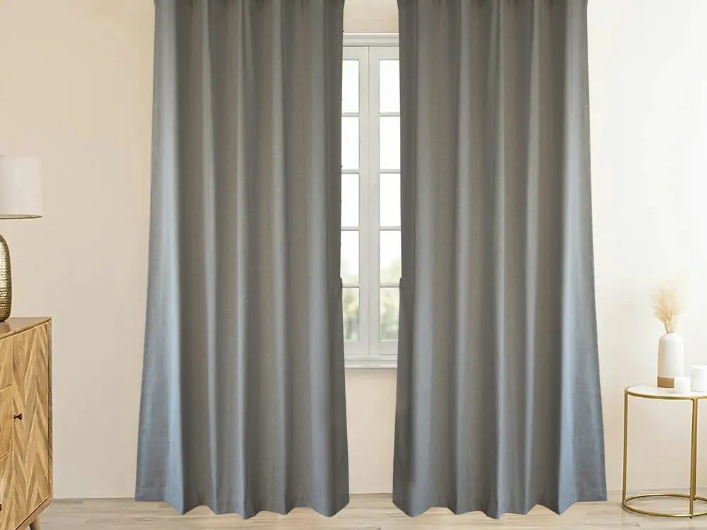

Hang thermal curtains
A lined curtain closed at dusk puts a still layer of air between you and a cold window.
Mostly comes off at move-out
$25 to $75
1 to 2 hours
Medium impact

What you need
- Lined or thermal curtains wide enough to overlap the window frame on both sides
- A rod, or a tension rod that sits inside the window recess and needs no screws
- If the existing rod stays up, nothing else
Before you drill anything
A tension rod inside the window recess holds by friction and leaves no holes, so it needs no permission. A bracket screwed into the wall or the frame does leave holes, and that is the version to ask about first. Most leases treat holes in a wall as damage rather than decoration, so get a yes in writing before the drill comes out.
Steps
- Measure the window opening, then buy curtains wider than it. Overlap at the sides is what stops air sliding around the edge.
- Hang the rod as high and as wide as it will go, so the curtain covers frame as well as glass.
- Close the curtains at dusk, before the room starts losing heat, rather than at bedtime.
- Open them again on any window that gets direct sun during the day.
- Keep the hem clear of a radiator or a baseboard heater underneath the window. A curtain lying across a heat source traps the heat behind it.
Sources
Last reviewed 2026-08-24.